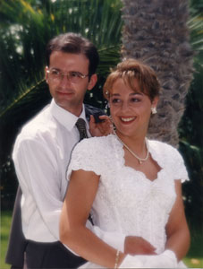

Juan Ruiz Félix & Magdalena García Izquierdo
Juan Ruiz Félix & Magdalena García Izquierdo  Juan Ruiz Félix & Magdalena García Izquierdo
Juan Ruiz Félix & Magdalena García Izquierdo 
This page is within a frameset. View the entire genealogy report of family Juan Ruiz Félix & Magdalena García Izquierdo, or surname index or report summary.
Gedcom Viewer.
© 2006 GenoPro Inc. All Rights Reserved.